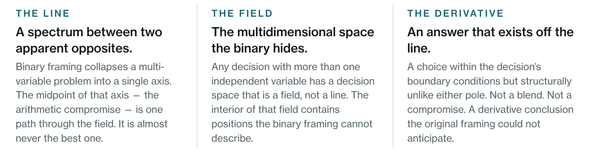
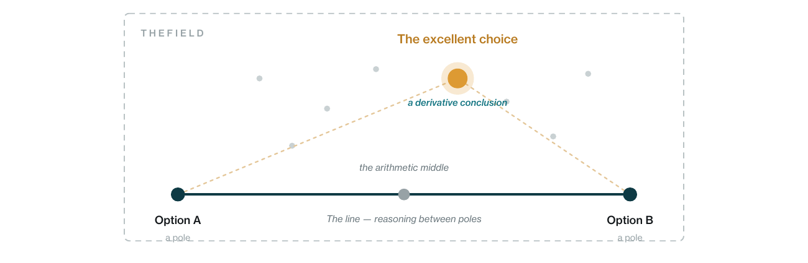
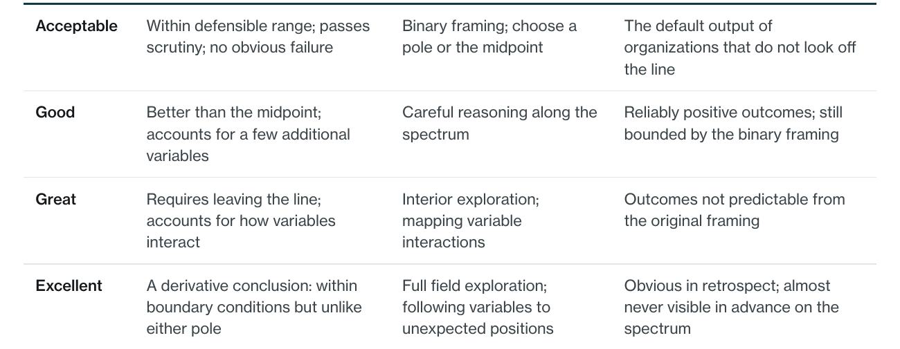
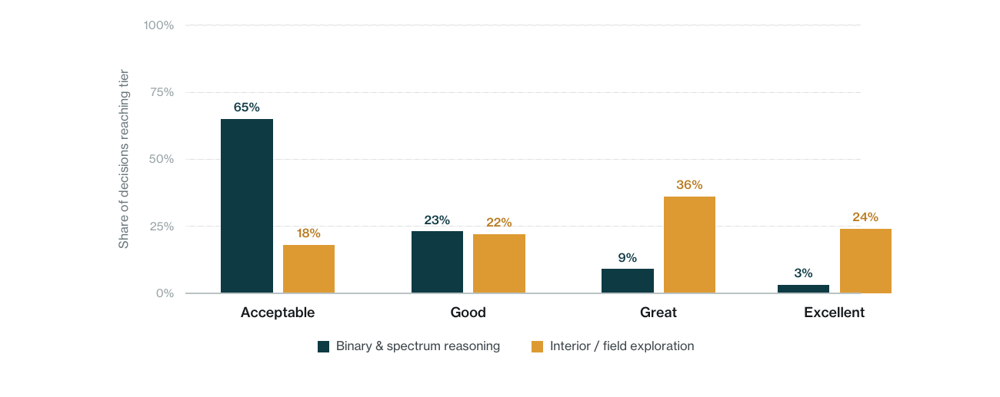
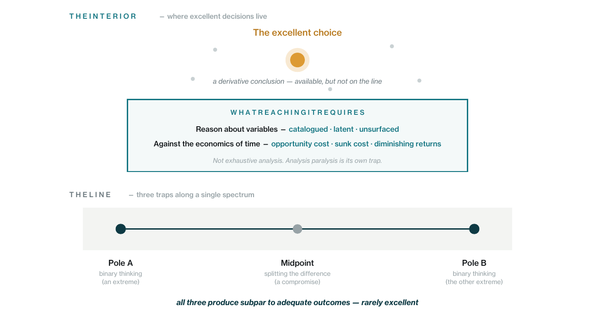

Organizations consistently frame hard decisions as binaries. Centralize or decentralize. Standardize or customize. Invest or cut. The framing feels like rigor. It is actually a shortcut – one that collapses a high-dimensional decision space into a single axis and makes most of the available options structurally invisible.
The result is not bad decisions. That is what makes the problem difficult to see. The result is acceptable decisions – outcomes that pass scrutiny, produce no obvious failure, and leave everyone believing the right call was made. Acceptable is not a floor. For organizations that never learn to look off the line, it becomes a ceiling.

The evidence organizes around three findings.
Finding 01 – The space between two apparent opposites is not a line. It is a field. Binary framing collapses a multi-variable decision into a single spectrum. The midpoint of that spectrum – the arithmetic compromise – is one path through the available space. It is almost never the most productive one. The best available choice is typically a derivative conclusion: technically within the boundary conditions of the original decision, but structurally unlike either pole.
Finding 02 – Most organizational failure is not caused by bad decisions. It is caused by acceptable ones. When leaders make explicitly bad choices, the failure is visible and the cause is legible. When leaders make acceptable choices – defensible, within normal range, passing scrutiny – the gap between what was chosen and what was possible never appears on the ledger. Post-mortems clear the decision-maker. The excellent choice goes unfound and unnamed.
Finding 03 – Reaching the interior of the decision space is a structural problem, not a talent problem. Three forces keep organizations on the line: the cognitive cost of holding multiple variables simultaneously, the accountability asymmetry that makes interior choices harder to defend when they fail, and the framing capture that pulls reasoning back toward the poles even when people are actively trying to escape them. These are not individual failures. They are conditions that organizations can design around.
The paper concludes with what interior reasoning actually looks like in practice – for organizations and for the leaders who operate within them – and what it takes to build the structural conditions that make excellent choices findable rather than accidental.
1.The Binary Is a Tool, Not a Truth
How decisions become apparent opposites
When an organization faces a genuinely hard decision, the first thing it does is simplify. It identifies the two most visible options, names them as opposites, and begins reasoning about which one to choose – or, if neither feels right, where on the spectrum between them to land. This is not laziness. It is an efficient response to cognitive overload. Binary framing reduces an unmanageable number of variables to a single dimension that can be debated, communicated, and decided.
The problem is not that it simplifies. Simplification is necessary. The problem is that it mistakes simplification for completeness. Once a decision has been framed as a binary, the frame itself becomes invisible. People stop asking whether the two options exhaust the available space and start asking only which of the two is better. The rest of the field – which may be very large – disappears from view.
Why the field is larger than it looks
Any organizational decision with more than one independent variable has a decision space that is multidimensional. Two variables produce a plane. Three produce a volume. Real organizational decisions – about structure, resource allocation, process design, governance – typically involve many variables, each with its own range. The space between any two extreme positions in that environment is not a line. It is a field, and often a very large one.
The arithmetic middle – the midpoint on the spectrum between the two poles – is one point in that field. It inherits the assumptions of both extremes, blends them, and calls the result a compromise. This is not exploration. It is interpolation. It produces an answer that is structurally dependent on the framing of the original binary rather than on the actual shape of the decision space.
“The arithmetic middle is not a compromise. It is a failure of geometry – an answer defined entirely by its relationship to the poles rather than by the terrain it sits in.”
The derivative conclusion
What actually exists in the interior of the decision space is something different from a blend or a compromise. A derivative conclusion is a choice that is technically within the boundary conditions of the original decision – it is neither pole, and it is not outside the permitted range – but it is structurally unlike either option. It does not split the difference. It accounts for variable interactions and produces an outcome that neither pole could have predicted from its own position.
These choices are almost always invisible to anyone reasoning along the spectrum. You can only find them by exploring the field rather than walking the line.

2.Acceptable Is Not a Floor. It Is a Ceiling.
Most people think about organizational decision quality as a pass/fail problem: was the choice good or bad, right or wrong? That framing has a comfortable symmetry. It also misses where most consequential organizational underperformance actually lives.
Leaders rarely make explicitly bad choices. Explicitly bad choices are visible, attributable, and correctable. What organizations produce with much greater frequency are acceptable choices – decisions that are defensible, within the normal range, and produce outcomes that no one would flag as failures. The postmortem clears the decision-maker. The gap between what was chosen and what was possible never appears on the ledger.
The quality tier problem
It is useful to think about decision quality not as a binary but as a set of tiers. Not because the tiers are always distinct in practice – they are not – but because the distinction clarifies what is actually at stake.

Why acceptable is dangerous
Acceptable does not feel like underperformance. It feels like a reasonable outcome from a reasonable process. The decision was sound. The outcome was within normal range. No failure needs explaining. The excellent choice that was available and unfound goes unexamined – not because anyone suppressed it, but because the organization never built a way to measure the distance between what it chose and what it could have chosen.
The damage of acceptable decisions is not visible in any single one. It is visible only in the pattern that accumulates over time – a point this paper returns to in its closing.
“Most organizations are not choosing between two options. They are choosing between two ways of not looking for the third.”

3.Why the Interior Is Hard to Reach
If the interior of the decision space is where the best choices live, the obvious question is why organizations do not go there more often. The answer is not that leaders are incurious or that organizations lack talent. It is that three structural forces push reasoning back toward the line, consistently and often invisibly.
Cognitive load
Reasoning along the spectrum between two poles is cognitively cheap. The structure of the decision is inherited from the framing: there is a left, a right, and a midpoint. You can locate yourself on that structure without much effort.
Interior reasoning is more expensive because it requires building a new structure rather than borrowing the one the binary provides. You have to identify the relevant variables, reason about how they interact, and follow the logic to positions that the original framing did not anticipate. That is harder work, and it does not feel productive until it produces something – which it may not, for a while.
Accountability asymmetry
If you choose an extreme position and it fails, your reasoning is legible. You made a clear call. If you choose the midpoint and it fails, you can point to the balance you were trying to strike. If you choose something from the interior – a derivative conclusion that does not map cleanly onto either pole – and it fails, explaining why you were there is significantly harder. The interior choice carries higher accountability exposure even when it is the better choice.
This asymmetry is compounded by the quality tier problem. Acceptable choices do not trigger investigation. The cost of not reaching the excellent choice simply does not appear on the ledger. The interior remains unexplored not just because it is hard to reach but because the cost of not reaching it is rarely visible.
Framing capture
The binary does not just structure the decision. It structures the vocabulary of the decision. Even people actively trying to escape binary framing tend to describe their alternatives using the language of the poles – which pulls the perceived solution back toward the line. A genuinely interior choice often sounds, when described, like a blend or a compromise, even when it is structurally neither. This makes it harder to advocate for, harder to defend, and easier for others to reframe as just another point on the spectrum.

4.What Interior Reasoning Actually Looks Like
Interior reasoning is not a technique. It is not a workshop or a framework or a decision matrix. It is a set of conditions – structural and cognitive – that make it possible to explore the field rather than walk the line. Organizations that consistently find excellent rather than acceptable decisions share a recognizable set of those conditions.
They surface the variables before the binary forms
Binary framing happens fast. The two poles appear early in a conversation and anchor everything that follows. Organizations that escape this dynamic have developed the habit of naming the underlying variables before allowing a binary to form – not to delay the decision, but to ensure that the framing reflects the actual shape of the problem rather than the first two options that came to mind.
They reason about variables, not just positions
A position is a point on the spectrum: centralize, decentralize, or somewhere in between. A variable is something that affects the outcome independently: the cost of coordination, the speed of local adaptation, the capacity of the center, the maturity of the units. Reasoning about variables rather than positions opens up the interior because it allows conclusions that do not map onto the original spectrum – driven by the logic of the variables rather than the geometry of the poles.
The discipline goes further. Variable reasoning means distinguishing among three classes of variable. The catalogued – those already identified and measured – are typically what the binary already accounts for, which is why reasoning from the catalogued alone rarely escapes the spectrum. The latent – those you can sense affect the outcome but cannot yet quantify – usually drive the derivative conclusion, because their interaction effects do not map onto the geometry of the line. The unsurfaced – those not yet in the framing at all – are what most consequential decisions ultimately rest on. The work is reasoning about all three against the three economic forces that govern how variables matter in time: opportunity cost, sunk cost, and diminishing returns.
This is not exhaustive surfacing. That path leads to analysis paralysis, which is its own kind of trap – just as binary thinking and splitting the difference are traps. It is the practice of treating the decision space as a terrain to be navigated against time, rather than a map to be completed before acting.
They evaluate decisions against what was possible, not just what happened
This is the structural condition most organizations lack. After a decision is made and its outcome is known, most organizations ask: was this a good decision? They evaluate the choice against the outcome. Organizations that develop interior reasoning capacity ask a second question: given the decision space that actually existed, was this the best available choice? That question requires having mapped the space before the decision was made – which is exactly the diagnostic capability that distinguishes organizations that find excellent outcomes from those that reliably find acceptable ones.
“Acceptable is not a floor. It is a ceiling – for organizations that never learned to look off the line.”
The work itself
Interior reasoning is sometimes mistaken for an executive luxury – the kind of analytic indulgence that organizations under pressure cannot afford. The misunderstanding runs in the wrong direction. The art of interior reasoning is precisely the work that senior leadership is paid for: not the volume of decisions made, not the speed of any single call, but the cumulative quality of a small number of consequential ones. That work demands both analytic precision – the discipline to surface and weigh variables across the catalogued, the latent, and the unsurfaced – and emotional dedication: the courage to defend an interior position that cannot be reduced to a pole, the patience to do the variable work properly, the willingness to be the one who could not articulate the choice in the vocabulary of the binary.
What it is not is the work of waiting. Patton said it most plainly: a good plan, violently executed now, is better than a perfect plan next week. Time forecloses on decisions. A choice that would be excellent now may not stay available next quarter. The discipline is to do the variable work fast enough to act inside the window the environment leaves open – not slowly enough to surface every contingency before committing. Analysis paralysis is its own trap precisely because it sacrifices the temporal availability of good outcomes to the pursuit of perfect ones.
The individual dimension
The same dynamic operates at the individual level. Leaders who consistently find excellent rather than acceptable answers have developed a personal diagnostic habit: they notice when they are reasoning along a line rather than exploring a field, and they have built the tolerance for the discomfort that interior exploration requires – the cognitive load, the accountability exposure, the difficulty of explaining where they ended up using the vocabulary of the binary they started from.
This is not a personality trait. It is a learned orientation that can be developed deliberately. Which means it is also something organizations can cultivate – through the structures they build, the questions they normalize, and the way they evaluate decisions after the fact. Did we find the best available answer, or the most defensible one? Most organizations only ask the second question. The ones that ask both are doing something structurally different.
“The goal is not to eliminate binary framing – it is too useful as a communication device to discard. The goal is to stop mistaking the line for the territory.”
5.Conclusion
The binary is not going away. It is too useful as a simplification device, too embedded in how institutions make decisions legible to stakeholders, and too cognitively efficient to abandon. The goal is not to replace it. The goal is to stop treating it as a complete description of the available space.
Most of the decisions that shape organizational performance – how work is structured, how authority is distributed, how resources are allocated, how processes are designed – have decision spaces that are much larger than the binaries used to frame them. The excellent choice in most of those decisions is not on the line. It is in the field. And it will not be found by splitting the difference, choosing a pole, or reasoning carefully along the spectrum between two apparent opposites.
It will be found by organizations and leaders that have developed the structural capacity to explore the interior – to surface the variables, to reason about their interactions, to follow the logic to derivative conclusions the original framing did not anticipate, and to evaluate what was chosen against what was possible. That capacity is not a function of talent or leadership personality. It is a function of design.
Making the hidden structure of organizational decisions visible – the variables behind the apparent binary, the interactions that produce derivative conclusions, the distance between what was chosen and what was possible – is one of the hardest and most consequential things an institution can learn to do. It does not happen by accident. It is built.
None of this is about a single decision. Decisions compound. Across months, quarters, and years, the pattern of decisions an organization makes accumulates in one of three directions. Consistently reaching the interior compounds toward progress – the organization adapts faster than its environment changes, accumulates capability, and stays ahead of the conditions it operates in. Consistently landing at the midpoint compounds toward stagnation – the organization keeps making the safe choice while the world around it evolves, until the gap between what it can do and what its environment requires becomes unbridgeable. Consistently landing at the poles compounds toward reversal – the organization keeps making clear, defensible, structurally inadequate calls until the accumulated cost becomes a crisis.
This is why time matters. Patton’s principle generalizes: a good plan executed now is better than a perfect plan next week. Interior reasoning is not the work of waiting for perfect information; it is the work of making the higher-quality decision possible inside the window time still leaves open. A choice that would be excellent now may not stay available next quarter. The discipline of reasoning about variables and the economic forces that act on them is not analytic indulgence – it is what makes the difference between organizations that compound forward and organizations that compound the other way.
This is what senior leadership is paid for. Not the volume of decisions made. Not the speed of any individual call. The cumulative effect of regularly making the higher-quality decision when both binary thinking and splitting the difference were available, and acting before the window closes. The line is comfortable. The interior is the work. Over time, the difference between them is the difference between an organization that goes somewhere and one that does not.
Monderman helps organizations see the structural shape of the decisions they are making – the variables behind the apparent binary, the interactions that produce derivative conclusions, the distance between what was chosen and what was possible – and the cumulative effect of that distance, decision by decision, on